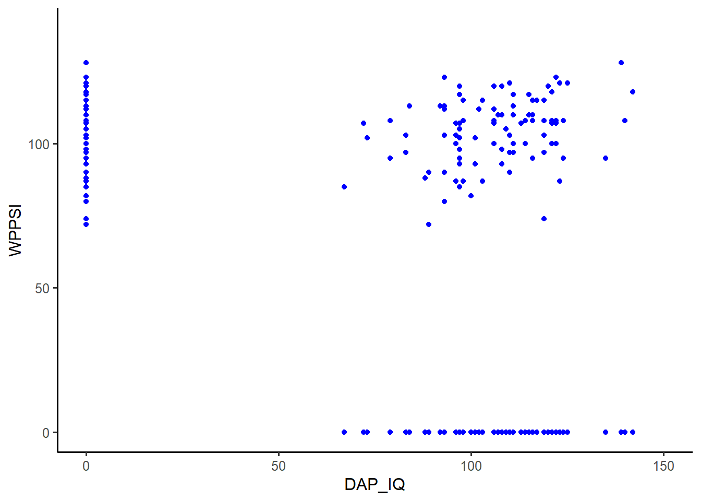

![]()
Motivation

Multilevel analysis has dramatically burst on the scene, and we now have the statistical tools to study phenomena at multiple levels. However, many researchers think that they cannot conduct such analyses because they are too complicated and they require specialized, expensive software. Fortunately, as this book shows, both of these beliefs are mistaken.
First, multilevel analysis is not all that complex, as conveyed in the subtitle of the book: “It’s Just Regression.” If the reader understands multiple regression, the fundamental statistical model in the social sciences, it is a relatively simple step to learn about multilevel analysis.
Series Editor’s Note (David A. Kenny)
Korrelation → Regression → Multilevel-Analysis (Multilevel-Regression)
Pakete
Korrelation
Imuta K, Scarf D, Pharo H, Hayne H (2013) Drawing a Close to the Use of Human Figure Drawings as a Projective Measure of Intelligence. PLoS ONE 8(3): e58991.
- https://doi.org/10.1371/journal.pone.0058991 (Paper)
- https://doi.org/10.1371/journal.pone.0058991.s001 (Daten im Word-Format)
- https://github.com/PawelKulawiak/rworkshop/blob/main/DATA_doi_10.1371_journal.pone.0058991.xlsx (Daten im Excel-Format)
- https://github.com/PawelKulawiak/rworkshop/raw/refs/heads/main/DATA_doi_10.1371_journal.pone.0058991.xlsx (Direkter Download: Daten im Excel-Format)
Variablen:
- DAP_IQ: Draw-A-Person Intellectual Ability Test (Mann-Zeichen-Test)
- WPPSI: Wechsler Preschool and Primary Scale of Intelligence


DATA <-
read_xlsx("DATA_doi_10.1371_journal.pone.0058991.xlsx")
head(DATA) %>%
gt() %>%
tab_options(table.align = "left") %>%
tab_header("Die ersten 6 kinder des Datensatzes", "100 Kinder insgesamt")| Die ersten 6 kinder des Datensatzes | ||
| 100 Kinder insgesamt | ||
| Participant | DAP_IQ | WPPSI |
|---|---|---|
| 1 | 67 | 85 |
| 2 | 72 | 107 |
| 3 | 73 | 102 |
| 4 | 79 | 95 |
| 5 | 79 | 108 |
| 6 | 83 | 97 |
Visualisierung
Die dargestellten Abbildungen demonstrieren die univariate Visualisierung beider Verteilungen (separate Histogramme für DAP_IQ und WPPSI) und anschließend die Überführung der beiden univariaten Verteilungen in einen 2-dimensionalen Raum, also das bivariate Streudiagramm (scatter plot) der beiden Variablen (DAP_IQ und WPPSI).
DATA %>%
ggplot(aes(x = DAP_IQ, y = WPPSI)) +
geom_point(aes(y = 0), col = "blue") +
geom_point(aes(x = 0), col = "blue") +
geom_point(col = "blue") +
xlim(c(0, 150)) +
ylim(c(0, 140)) +
theme_classic(base_size = 12)
DATA %>%
ggplot(aes(x = DAP_IQ, y = WPPSI)) +
geom_point(col = "blue") +
xlim(c(0, 150)) +
ylim(c(0, 140)) +
#
#
theme_classic(base_size = 12)


{kind=link}
{kind=link}
DATA %>%
ggplot(aes(x = DAP_IQ, y = WPPSI)) +
geom_point(col = "blue") +
theme_classic(base_size = 12)
https://indrajeetpatil.github.io/ggstatsplot/reference/ggcorrmat.html
R Session Info
─ Session info ───────────────────────────────────────────────────────────────
setting value
version R version 4.5.0 (2025-04-11 ucrt)
os Windows 11 x64 (build 26100)
system x86_64, mingw32
ui RTerm
language (EN)
collate German_Germany.utf8
ctype German_Germany.utf8
tz Europe/Berlin
date 2025-06-17
pandoc 3.4 @ C:/Program Files/RStudio/resources/app/bin/quarto/bin/tools/ (via rmarkdown)
quarto NA @ C:\\PROGRA~1\\RStudio\\RESOUR~1\\app\\bin\\quarto\\bin\\quarto.exe
─ Packages ───────────────────────────────────────────────────────────────────
package * version date (UTC) lib source
cachem 1.1.0 2024-05-16 [1] CRAN (R 4.5.0)
cellranger 1.1.0 2016-07-27 [1] CRAN (R 4.5.0)
cli 3.6.5 2025-04-23 [1] CRAN (R 4.5.0)
devtools * 2.4.5 2022-10-11 [1] CRAN (R 4.5.0)
digest 0.6.37 2024-08-19 [1] CRAN (R 4.5.0)
dplyr * 1.1.4 2023-11-17 [1] CRAN (R 4.5.0)
ellipsis 0.3.2 2021-04-29 [1] CRAN (R 4.5.0)
evaluate 1.0.3 2025-01-10 [1] CRAN (R 4.5.0)
farver 2.1.2 2024-05-13 [1] CRAN (R 4.5.0)
fastmap 1.2.0 2024-05-15 [1] CRAN (R 4.5.0)
forcats * 1.0.0 2023-01-29 [1] CRAN (R 4.5.0)
fs 1.6.6 2025-04-12 [1] CRAN (R 4.5.0)
generics 0.1.4 2025-05-09 [1] CRAN (R 4.5.0)
ggplot2 * 3.5.2 2025-04-09 [1] CRAN (R 4.5.0)
glue 1.8.0 2024-09-30 [1] CRAN (R 4.5.0)
gt * 1.0.0 2025-04-05 [1] CRAN (R 4.5.0)
gtable 0.3.6 2024-10-25 [1] CRAN (R 4.5.0)
hms 1.1.3 2023-03-21 [1] CRAN (R 4.5.0)
htmltools 0.5.8.1 2024-04-04 [1] CRAN (R 4.5.0)
htmlwidgets 1.6.4 2023-12-06 [1] CRAN (R 4.5.0)
httpuv 1.6.16 2025-04-16 [1] CRAN (R 4.5.0)
jsonlite 2.0.0 2025-03-27 [1] CRAN (R 4.5.0)
knitr 1.50 2025-03-16 [1] CRAN (R 4.5.0)
labeling 0.4.3 2023-08-29 [1] CRAN (R 4.5.0)
later 1.4.2 2025-04-08 [1] CRAN (R 4.5.0)
lifecycle 1.0.4 2023-11-07 [1] CRAN (R 4.5.0)
lubridate * 1.9.4 2024-12-08 [1] CRAN (R 4.5.0)
magrittr 2.0.3 2022-03-30 [1] CRAN (R 4.5.0)
memoise 2.0.1 2021-11-26 [1] CRAN (R 4.5.0)
mime 0.13 2025-03-17 [1] CRAN (R 4.5.0)
miniUI 0.1.2 2025-04-17 [1] CRAN (R 4.5.0)
pillar 1.10.2 2025-04-05 [1] CRAN (R 4.5.0)
pkgbuild 1.4.7 2025-03-24 [1] CRAN (R 4.5.0)
pkgconfig 2.0.3 2019-09-22 [1] CRAN (R 4.5.0)
pkgload 1.4.0 2024-06-28 [1] CRAN (R 4.5.0)
profvis 0.4.0 2024-09-20 [1] CRAN (R 4.5.0)
promises 1.3.2 2024-11-28 [1] CRAN (R 4.5.0)
purrr * 1.0.4 2025-02-05 [1] CRAN (R 4.5.0)
R6 2.6.1 2025-02-15 [1] CRAN (R 4.5.0)
RColorBrewer 1.1-3 2022-04-03 [1] CRAN (R 4.5.0)
Rcpp 1.0.14 2025-01-12 [1] CRAN (R 4.5.0)
readr * 2.1.5 2024-01-10 [1] CRAN (R 4.5.0)
readxl * 1.4.5 2025-03-07 [1] CRAN (R 4.5.0)
remotes 2.5.0 2024-03-17 [1] CRAN (R 4.5.0)
rlang 1.1.6 2025-04-11 [1] CRAN (R 4.5.0)
rmarkdown 2.29 2024-11-04 [1] CRAN (R 4.5.0)
rstudioapi 0.17.1 2024-10-22 [1] CRAN (R 4.5.0)
sass 0.4.10 2025-04-11 [1] CRAN (R 4.5.0)
scales 1.4.0 2025-04-24 [1] CRAN (R 4.5.0)
sessioninfo 1.2.3 2025-02-05 [1] CRAN (R 4.5.0)
shiny 1.10.0 2024-12-14 [1] CRAN (R 4.5.0)
stringi 1.8.7 2025-03-27 [1] CRAN (R 4.5.0)
stringr * 1.5.1 2023-11-14 [1] CRAN (R 4.5.0)
tibble * 3.2.1 2023-03-20 [1] CRAN (R 4.5.0)
tidyr * 1.3.1 2024-01-24 [1] CRAN (R 4.5.0)
tidyselect 1.2.1 2024-03-11 [1] CRAN (R 4.5.0)
tidyverse * 2.0.0 2023-02-22 [1] CRAN (R 4.5.0)
timechange 0.3.0 2024-01-18 [1] CRAN (R 4.5.0)
tzdb 0.5.0 2025-03-15 [1] CRAN (R 4.5.0)
urlchecker 1.0.1 2021-11-30 [1] CRAN (R 4.5.0)
usethis * 3.1.0 2024-11-26 [1] CRAN (R 4.5.0)
vctrs 0.6.5 2023-12-01 [1] CRAN (R 4.5.0)
withr 3.0.2 2024-10-28 [1] CRAN (R 4.5.0)
xfun 0.52 2025-04-02 [1] CRAN (R 4.5.0)
xml2 1.3.8 2025-03-14 [1] CRAN (R 4.5.0)
xtable 1.8-4 2019-04-21 [1] CRAN (R 4.5.0)
yaml 2.3.10 2024-07-26 [1] CRAN (R 4.5.0)
[1] C:/Users/Graduiertenschule/AppData/Local/R/win-library/4.5
[2] C:/Program Files/R/R-4.5.0/library
* ── Packages attached to the search path.
──────────────────────────────────────────────────────────────────────────────